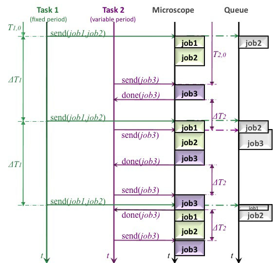

Setting up an Advanced Measurement
General Information
An advanced measurement can be created with the option New Measurement->New Advanced Measurement in the toolbar of the YouScope window. This measurement type has the advantage of more flexibility in setting up the measurement procedure and the possibility to run several tasks with different periods in parallel compared to a microplate measurement. Figure 1 shows the flowchart of an advanced measurement.
In general a task is defined as a set of program instructions. The single instructions are called jobs. The task sends its jobs into a queue, which is processed by the microscope executes one by one. The order of the jobs in the queue depends on the arrival of the jobs (first in - first out).
While in microplate measurement the jobs for one big task are selected, in advanced measurement several tasks with fixed or variable period containing several jobs can be specified. The tasks are executed in parallel (multi-threading)and send their jobs to the queue, like demonstrated in Figure 1. Job 1 and job 2 of task 1 are sent with a fixed period to the queue. Job 1 is immediately executed by the microscope and job 2 waits in the queue until job 1 is finished. The fixed period of task 1 is measured between the starts of two following jobs (start job i to start job i+1) and named as ΔT1 in Figure 1. The period length of the task is identical to the period length between the executions by the microscope.
Task 2 sends its job 3 to the queue or directly to the microscope, when the microscope is not busy. After job 3 is executed by the microscope a response is send back to task2, that sends then again a job 3 to the queue or microscope. ΔT2 is measured between the end and start of two following jobs (end of job i to start of job i+1). With the result that task 2 sends its job 3 with a variable time period to the queue, but the time ΔT2 between the feedback at end of executed job 3 and send of the following job 3 is constant.
|  | Figure 1: Flowchart of an advanced measurement. The execution of the task with fixed period and a variable period by the microscope is plotted. Task 1 and task 2 are printed in green and prink, respectively. The queue and the execution by the microscope are plotted in grey. The feedback of task 2 is displayed in light pink. |
General Properties
In case of New Advanced Measurement a window, called New Configurable Measurement, appears with a Next and Previous on the bottom for switching between different windows. These windows display parameters grouped in three classes, like Measurement Properties, Measurement Start and End settings and Definition of Measurement Tasks.

{kind=link}
{kind=link}
{kind=link}